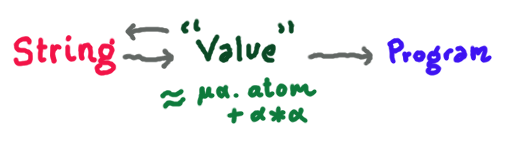

Homoiconicity
The term "homoiconic", often used to describe lisps, was the target of some
interesting critique on twitter lately.
(Click through for a long and interesting thread of discussion)
I think it's great that the term is getting some scrutiny, though not
because I agree that it's meaningless... But I do think its
meaning --- or maybe I should even say, the potential different
meanings, plural, it could plausibly have --- are kind of muddled
and confusing, and deserve clarification.
I'm going to try to answer a different question from "what is
homoiconicity?" because "what is X?" questions are always inherently a little
sketchy. Instead I'm going to think about the question:
Why does the experience of writing program-manipulating-programs
(including but not limited to macros) in lisp feel special?
I think there's two separable groups of reasons why:
- the type structure (!) of a typical lisp
- the concrete syntax of a typical lisp
Crucially, I'm not going to argue that lisps are special in
any distinct, black-and-white, all-or-nothing way. I think the
sense in which they feel special is a rather squishy matter of
pragmatics and convenience. Bringing back the h-word for just a
moment, I'd tend to think of "homoiconic" as a property more like
"elegant" or "user-friendly", rather than "type-sound" or
"turing-complete". But I think this way as a consequence of the
arguments below, so let me set up some context so that I can
argue them.
Type Structure: Junk, Noise
Free algebras on theories
are sometimes
characterized informally by saying they have "no junk" and "no
noise". For example, the free monoid on the list $[a,b,c]$ has as
elements only the things that can be built from $a, b, c$
and the monoid operations ("no junk") and the only equations
that hold between them are those mandated by the monoid laws
("no noise"). For example, $ab$ and $ba$ are distinct elements of
the free monoid, because we didn't postulate commutativity.
What's the type of 'programs'? Can the type of programs be
represented in your favorite blub language?
Krishnamurthi correctly points out that there's no obstacle to
representing C programs in C. And just as surely we could represent lisp
programs in lisp strings also:
(setq f "(lambda (x y) (+ y (* y x)))")
Why do we think of
(setq f '(lambda (x y) (+ y (* y x))))
as a better representation?
I claim it's because
it has less junk and less noise
with respect to some ideal
notion of program.
Let me back up and articulate more clearly what I need from the two
representations in play. The 'ideal programs' I'm talking about
can be thought of perhaps
as lambda-calculus terms
or something, up to $\alpha\beta\eta$-equality — or
JIT-compiled versions of the functions — the precise choice
here I don't think matters for my argument, but I could be wrong)
Now both the representations are going to be partial functions
from some type to the type of ideal programs.
The domain type of this function is either
strings (in the case of the string representation)
or arbitrary data values in some imaginary lisp implementation (in the
case of the 'sexp representation').
Having said that, we can observe
-
The sexp rep'n
has less junk than the string rep'n,
in the sense that
there are lots of strings that aren't even valid sexps,
for example,
")((( lambda + + [ /"
However, every lisp value does have a way of writing it as a string,
at least, mumble mumble footnote mumble, if what I mean
by "lisp value" is limited to "atom or cons cell of two lisp values".
- The sexp rep'n
has less noise than the string rep'n,
in the sense that
there are lots of strings that denote the same lisp value, for example
( lambda
(x y) ( + y x))
and
(lambda(x y)(+ y x))
However, it's still true of the sexp representation that
- It has some junk in the form of programs like
(lambda (x) y)
that use variables that haven't been bound
(and you could maybe also argue that permitting intuitively obviously
type-incorrect expressions like (+ "string" 42) is a form of "junk",
but to say that would be poking a much larger hornet's nest ;)
- It has some noise in the sense that it doesn't equate
$\alpha$-equivalent programs, like
(lambda (x) x)
and
(lambda (y) y)
(and you could maybe also argue that failure to equate up to $\beta$
and $\eta$ is also a form of "noise")
So what do lisps give you, in terms of type structure?

A typical lisp gives you
- a choice of a type,
what I've been calling 'lisp values' but which differs in its
precise details from language to language, but which is somewhat
nearer to the ideal type of programs in the programmer's mind,
in the sense of having somewhat less junk and less noise.
- (partial) functions which convert this type to and from strings,
and which convert it to executable functions, in such a way
that they're ergonomically rather
easy to invoke — they either have really basic names like
read and probably don't require any module-import boilerplate
to use,
or are baked into the quoting-unquoting-evaluation mechanisms of the language.
Note how squishy and nonabsolute these claims are! There's lots of
ways you could pick types to be a bit closer to Actual Programs. Has
anyone ever made something that feels like a lisp variant, except
there's designated syntax for variable binding sites, and and alpha-conversion
is quotiented out somehow? I've thought about that quite a few times over
the years... Indeed, let me call out as another advantage that
- The type of 'lisp values' is fairly simple, in terms
of gut-level kolmogorov-ish complexity. To say just $\mu \alpha.
\mathsf{atom} + \alpha * \alpha$ is a blatant
oversimplification for any real-world lisp — you probably also
want to include strings, characters, numbers, vectors, who knows what else —
but it's probably a lot more simple and uniform than the type that more precisely
(read: "with even less junk") describes the algebraic data type of, for example,
ocaml programs.
This is to emphasize even further that I think what's going on here is a trade-off,
not an on-off switch of homoiconic-or-not.
What do lisps give you, in terms of concrete syntax?
The remaining part of the picture I know less about, because I'm
not that serious of a lisp macro hacker, but I think there's another
bullet point or two to add about macros, or at least about the
choice of concrete syntax, i.e. the choice of the particular
functions that go between 'values' and the type string.
Otherwise, the advantages I've claimed above would also be satisfied
by any language that comes with a good standard (un)parsing library,
with a lisp-esque type for the AST.
So let me add that what a lisp gives you is
- The mapping between the type of 'lisp values' and strings is also
fairly simple, yadda yadda gut-level kolmogorov complexity, footnote mumble
subjective
de gustibus non disputandum etc.
The strength of this advantage also decreases gradually in proportion to the number
of exotic features (read: 'branches in the recursive sum type that is lisp values')
you cram into your lisp. But I think all the hallmarks of lisp syntax
— the reuse of parentheses for block structure
and for expression grouping, and making absolutely every operation prefix —
has some advantages in terms of actual human brains having a couple fewer things to learn.
(but also disadvantages, at times,
in terms of actual human brains having less redundant information
to discriminate on. Though I came here to, er, praise caesar, not bury him...)
- The concrete syntax of the language lets you easily pass back and forth
between building expressions
and invoking macro computations on expressions. I.e., quote, backtick/antiquote syntax,
and macros themselves.
This latter point is again something that's not a Totally Unique Incomparable Advantage
of lisp, but worth thinking about by comparison to macros in C, and string interpolation syntax
in lots of languages.